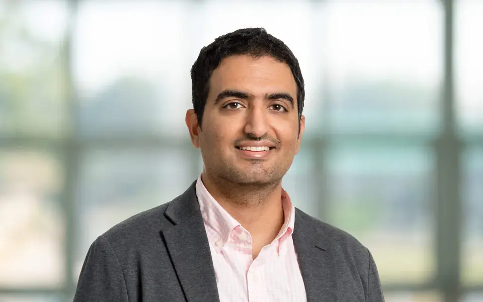
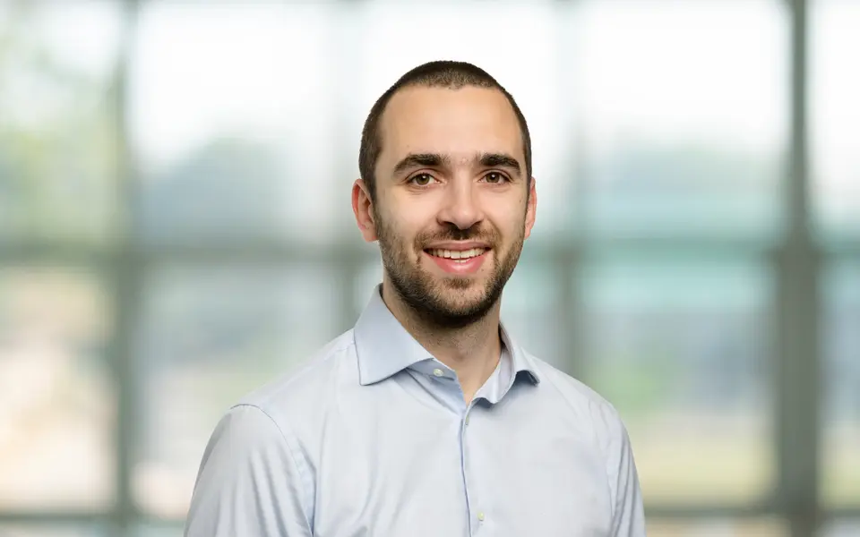
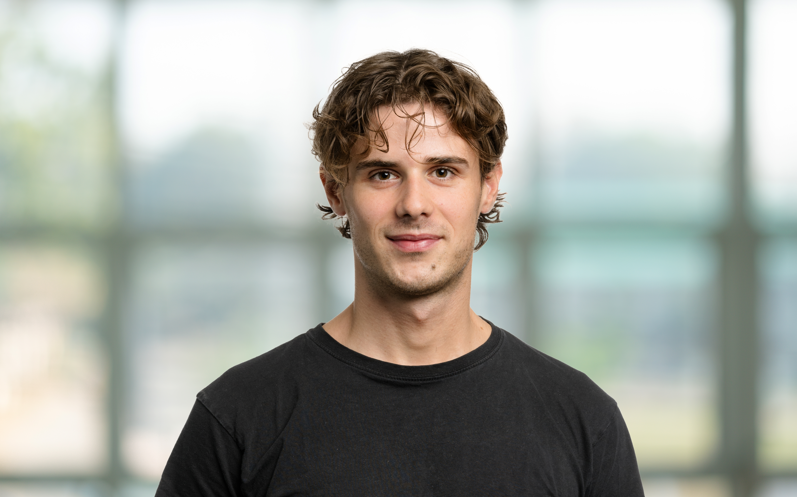

Hasan Sari
Principal Investigator
LAFOV PET, multi-modality imaging, image processing, and nuclear medicine.
Meet the researchers and students of Sari Lab.
PhD Student · 2025–Present
LAFOV PET attenuation correction, deep learning, image reconstruction, cardiac PET.

PhD Student · 2026–Present
Image reconstruction, image registration, and dynamic PET.

PhD Student · 2026–Present
Kinetic modelling, image analysis, and dynamic PET.